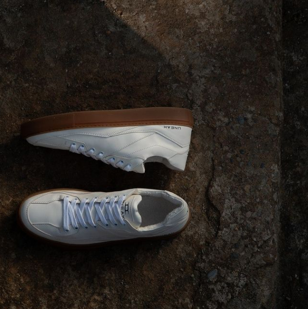

Sneakers which will change your next step making it more sustainable, animal friendly, conscious


We realize quite well that shoes are one of the most consumed products within the industry of fashion, which means volumes can be important, which is a big social responsibility.

Juarez is the name of the first sustainable sneaker shoes model from UNEAK, a new italian sustainable fashion brand, born from the ideas of Sonia and Davide.

The Juarez sneaker model features certified sustainable materials
It's produced completely in Italy, in a warm region where all workers live very close to the production site.